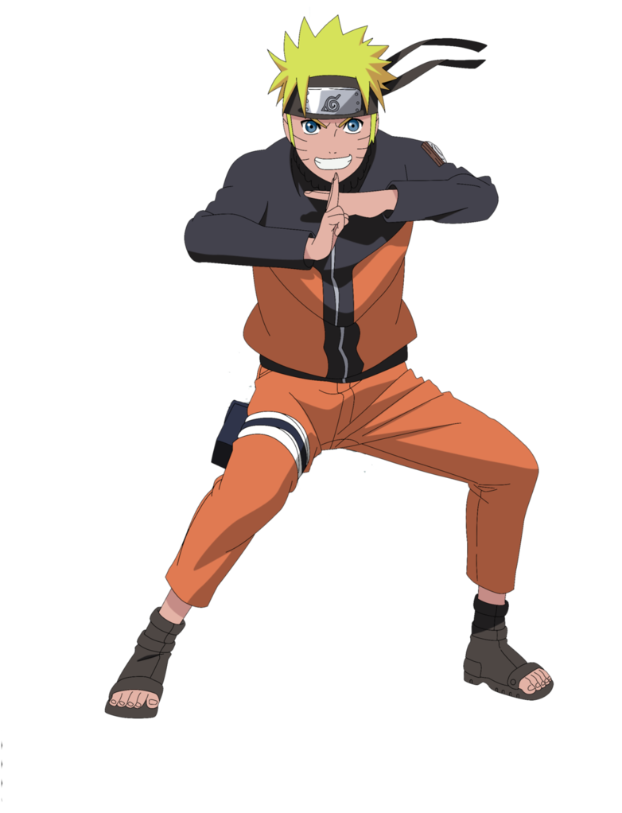

1. The beginning
2. Growing up
3. Getting better
4. Peak
5. The end


Undo the seal!
Naruto Uzumaki was born without any parents, both of them died while trying to save Naruto after an attack by the 9 Tailed Fox on the Village in the leaves. They were barely able to save him and had to seal the beast inside of their child to save the village. Because of this, Naruto grew up on his own, supervised by the third hokage, the leader of the village hidden in the leaves.
The 9 tails seal on Naruto's stomach.
the 9 tails
While growing up Naruto didn't have many friends. The beast that destroyed the village years ago was sealed inside him, which made a lot of people resent him. Parents pulled away their children from Naruto and told them not to play with him. While in the academy, Naruto spend most his time playing pranks on everyone in the village, which made them dislike him even more. Even though Naruto didn't have any real friends yet, he did hang around with Choji and Shikamaru, who were also troublemakers in class. This was a very sad time for Naruto, he didn't have any friends or other people to connect with. The loneliness made him pull pranks so he would at least get some attention. And when he got the attention he made sure to tell everyone to pay attention to him, as he was going to be the next hokage, believe it!
Choji and Shikamaru
Naruto pulling a prank
When it was finally time to graduate for Naruto, he failed the test. Being distraught he let himself get manipulated to steal a secret scroll from the village. He got caught but they noticed that Naruto wasn't at fault. Together with sensei Iruka they fought against the manipulator. When Iruka sensie got hurt, Naruto peaked into the scroll. Inside was the shadow clone jutsu. After trying it Naruto found out he had a talent for this jutsu. He used it and created hundreds of clones. After fighting off the manipulator, Iruka sensei gave let him graduate, making Naruto an official ninja! That means that he will get a squad consisting of 2 other ninja and a sensei. This is when Naruto gets teamed up with Sasuke, Sakura and Kakashi sensei. After getting through Kakashi's harsh exam they all become good friends.
Click on Naruto!
